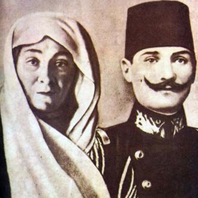
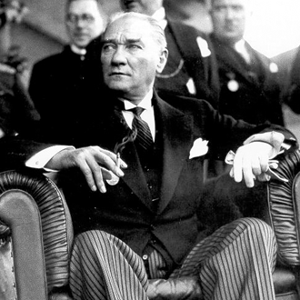
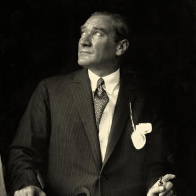
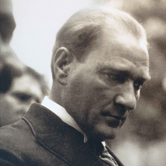
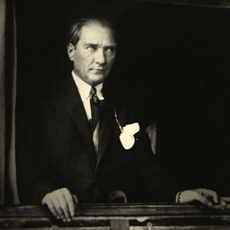
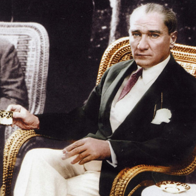
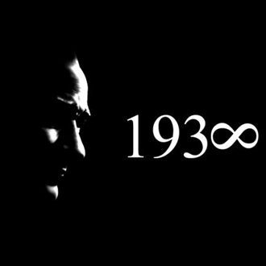

Getting Started
Include the jQuery library and plugin:
<script type="text/javascript" src="https://code.jquery.com/jquery-1.12.4.min.js"></script> <script type="text/javascript" src="dist/js/timeline.min.js"></script>
Include the plugin css file:
<link rel="stylesheet" href="dist/css/timeline.min.css" />
Html markup:
<div class="timeline-container timeline-theme-1">
<div class="timeline js-timeline">
<div data-time="2017">
your content or markup
</div>
<div data-time="2016">
your content or markup
</div>
<div data-time="2015">
your content or markup
</div>
<div data-time="2014">
your content or markup
</div>
<div data-time="2013">
your content or markup
</div>
</div>
</div>
Start Plugin:
$('.js-timeline').Timeline();
Examples
Default
$('.timeline-1').Timeline();

- Birth of Mustafa Kemal Ataturk to Ali Riza and Zübeyde at Salonika.

- German military mission established in Ottoman Empire.

- Young Mustafa enters Military Secondary School at Salonika and is given the additional name of Kemal.

- Mustafa Kemal enters Military Training School at Monastir.

- Revolt by students of Military Medical School in Istanbul suppressed.

- 17 April. Ottoman-Greek war commences, following a Greek threat to annex Crete. Peace settlement by intervention of the European Powers.

- State visit of Kaiser Wilhelm II to Ottoman Empire.
- 13 March. Mustafa Kemal enters War College in Istanbul.
- Mustafa Kemal graduates as Lieutenant, General Staff College in Istanbul.
- 11 January. Mustafa Kemal graduates from the General Staff College with the rank of Staff Captain and is posted to the Fifth Army, based in Damascus
- October. Mustafa Kemal helps to found Fatherland (Vatan) Society in Damascus.

- 20 June. Mustafa Kemal promoted Adjutant-Major.
- September. Mustafa Kemal posted to Third Army at Salonika.

- 24 July. 'Young Turk' Revolution in Salonika. Committee of Union and Progress forces Abdulhamit to restore Constitution of 1876 and recall Parliament.
- 5 October. Bulgaria proclaims independence.
- 7 October. Austria-Hungary annexes Bosnia and Herzegovina.
- 12 October. Crete votes for Union with Greece.
- Mustafa Kemal sent to Tripolitania on mission for Committee of Union and Progress.
- 13 April. Counter-revolution in Istanbul. Union and Progress striking force, with Mustafa Kemal as divisional chief of staff, marches on the city from Salonika.
- 27 April. Deposition and exile of Abdulhamit. Succession of Mehmet V as Sultan.
- Mustafa Kemal attends Congress of Union and Progress Party in Salonika.
- 6 September. Mustafa Kemal appointed Commander of Third Army and later Commander of Thirty-eighth Infantry Regiment.
- Mustafa Kemal serves as Chief of Staff in suppression of revolt in Albania.
- Mustafa Kemal sent to Paris with military mission to attend French army manoeuvres.
- 13 September. Mustafa Kemal is posted to the General Staff in Istanbul.
- 5 October. Italian invasion of Tripoli.
- Mustafa Kemal with Turkish Forces at Tobruk and Derna.
- 27 November. Mustafa Kemal promoted to Major.
- 8 October - 3 December. Beginning of First Balkan War. Montenegro, Serbia, Bulgaria and Greece at war with Ottoman Empire. Severe Turkish defeats. Salonika falls to the Greeks. Mustafa Kemal leaves Cyrenaica and returns to Istanbul. Coup d'etat against Government by Union and Progress officers.
- 25 November. Mustafa Kemal appointed Director of Operations for relief of Adrianople.
- Fall of Adrianople.
- 30 May. Treaty of London between Ottomans and Balkan states.
- 30 June - 20 July. Second Balkan War. Bulgaria attacks Greece, Serbia and Rumania. Ottomans recovers Adrianople.
- 27 September. Treaty of Bucharest restores territory to Ottoman Empire.
- 27 October. Mustafa Kemal appointed Military Attaché in Sofia.
- 1 March. Mustafa Kemal promoted Lieutenant-Colonel.
- 28 June. Assassination of Archduke Franz Ferdinand at Sarajevo.
- 16 July. Mustafa Kemal sends despatch to War Minister from Sofia, urging a policy of Turkish neutrality in the event of war, with a view to possible later intervention against Bulgaria and the Central Powers.
- 28 July. Austria declares war on Serbia, with support of Germany.
- 2 August. Ottoman leadership signs secret alliance with Germany.
- 11 August. Ottomans purchase German warships Goeben and Breslau on arrival in the Bosporus.
- 28 October. Ottomans shells Russian Black Sea ports.
- 3 November. Russia declares war on Ottoman Empire.
- 5 November. Britain and France declare war on Ottoman Empire.
- 2 February. Mustafa Kemal appointed to reorganize and command Nineteenth Division in Thrace.
- 19 February. Unsuccessful Allied naval attack on Dardanelles.
- 25 February. Mustafa Kemal establishes Headquarters of Nineteenth Division at Maidos on Gallipoli Peninsula.
- 18 March. Allied navy fails to force the Turkish Straits. Mustafa Kemal demonstrates outstanding skills as a soldier and commander throughout the battle at Canakkale.
- 25 April. Allied military landings at Ariburnu (Anzac Cove). Advance checked by Mustafa Kemal with his outstanding leadership of the Nineteenth Division.
- 1 June. Mustafa Kemal promoted Colonel.
- 8 - 9 August. Mustafa Kemal appointed to command of Sixteenth Army Corps.
- Checks second Allied advance on Gallipoli Peninsula.
- 9 January. Allied evacuation of Gallipoli Peninsula complete.
- 14 January. Mustafa Kemal posted to Adrianople in command of Sixteenth Army Corps. Transfer to Caucasus front.
- 1 April. Mustafa Kemal promoted General and Pasha.
- 27 June. Sherif of Mecca proclaims independence of Arabia.
- 6 - 7 August. Mustafa Kemal recaptures Bitlis and Muş from Russians.
- 5 March. Mustafa Kemal appointed second-in-command effective Commander of Second Army
- 11 March. British forces capture Baghdad.
- 5 July. Mustafa Kemal appointed Commander of Seventh Army in Syria.
- 20 September. Mustafa Kemal sends report to Government on the poor state of the army and the country, and relinquishes his command.
- October. Mustafa Kemal returns to Istanbul.
- 11 December. British forces capture Jerusalem.
- 15 December - 5 January 1918. Mustafa Kemal visits Germany with Crown Prince Vahdettin.

- 3 July. Death of Sultan Mehmet V. Vahdettin succeeds him as Mehmet VI.
- 7 August. Mustafa Kemal reappointed Commander of Seventh Army in Palestine.
- 19 - 30 September. British forces, under General Allenby, drive Turkish forces out of Palestine and Syria. Mustafa Kemal defends frontier north of Aleppo.
- 30 October. Armistice signed between Ottomans and Britain at Mudros.
- 31 October. Mustafa Kemal takes over command of Army Group at Adana.
- 7 November. Dissolution of Army Group.
- 13 November. Mustafa Kemal returns to Istanbul.
- Allied fleets enter Istanbul.
- 21 November. Dissolution of Parliament.
- 18 January. Opening of Peace Conference at Versailles.
- 30 April. Mustafa Kemal appointed Inspector-General of Ninth (later Third) Army in Anatolia.
- 15 May. Greek forces land in Izmir, with Allied approval.
- 19 May. Mustafa Kemal lands in Samsun.
- 21 June. Mustafa Kemal issues 'Declaration of Independence' at Amasya.
- Summons Nationalist Congress to be held in Sivas.
- 23 June. Mustafa Kemal ordered by the Ottoman Government to return to Istanbul.
- 8 July. Mustafa Kemal resigns from the army and is dismissed by the Ottoman Government.
- 23 July - 7 August. Nationalist Congress meets in Erzurum under presidency of Mustafa Kemal. Declarations of National Pact are issued.
- 4 - 13 September. Nationalist Congress meets at Sivas under presidency of Mustafa Kemal. Confirmation of National Pact. Establishment of Representative Committee.
- 5 October. Resignation of Government.
- 7 November. New Parliament elected in Istanbul with Nationalist representation.
- 27 December. Mustafa Kemal establishes headquarters in Ankara, with Representative Committee.
- 28 January. National Pact adopted by Istanbul Parliament.
- 9 February. Evacuation of French garrison from Maraş and start of general withdrawal from Cilicia.
- 16 March. Military occupation of Istanbul by Allies.
- 11 April. Dissolution of Istanbul Parliament.
- 23 April. First Grand National Assembly meets in Ankara.
- 11 May. Mustafa Kemal condemned to death by Sultan's Government.
- 10 June. Treaty of Sevres presented by Allies to Sultan's Government.
- 22 June - 9 July. Greek army advances into Anatolia and captures Bursa.
- 10 August. Treaty of Sevres signed by Sultan's Government.
- 24 August. Draft treaty initialled in Moscow between Soviet Union and Nationalist Government.
- 28 September - 2 November. Nationalist forces invade regions with Armenian revolts and capture Kars.
- 2 December. Soviet Union establishes Armenian Republic at Erivan.
- 3 December. Treaty of Gümrü settles Turco-Armenian frontiers.
- 6 - 10 January. Greek advance checked at First Battle of Inonu.
- 20 January. Grand National Assembly at Ankara adopts Constitution Act, based on popular sovereignty.
- 23 February - 12 March. London Conference fails to reach agreement with Nationalists on modifications to Treaty of Sevres.
- 16 March. Treaty of Moscow between Nationalist Government and Soviet Union.
- 23 March - 1 April. Greeks resume offensive in Anatolia and are checked at Second Battle of Inonu.
- 10 July. Greeks resume offensive and capture Eskişehir.
- 5 August. Mustafa Kemal given full powers as Commander-in-Chief by Grand National Assembly.
- 23 August - 13 September. Battle of Sakarya. Turks check Greek advance before Ankara.
- 26 August. Greeks thrown back at battle of Sakarya.
- 19 September. Mustafa Kemal given title of “Gazi”and rank of Marshal by Grand National Assembly.
- 13 October. Treaty of Kars between Nationalist Government and Transcaucasian Soviet Republics.
- 20 October. Treaty of Ankara between Nationalist Government and France.
- 26 August - 9 September. Nationalist forces defeat Greeks in counter-offensive and capture Izmir, which is destroyed by fire. Turks launch final offensive against Greek forces in Anatolia; break through the following day; win decisive victory on 30 August.
- 23 September. Nationalist forces enter the Turkish Straits Neutral Zone.
- 3 - 11 October. Conference at Mudanya agrees on Armistice between Allies and Nationalist Government.
- 19 October. Resignation of Lloyd George and his Government.
- 1 November. Mustafa Kemal proclaims abolition of Sultanate.
- 17 November. Flight of Sultan Mehmet VI from Istanbul.
- 20 November. Opening of Peace Conference at Lausanne.
- 14 January. Death of Mustafa Kemal's mother, in Izmir.
- 29 January. Mustafa Kemal marries Latife in Izmir.
- 4 February. Breakdown of Lausanne Conference.
- 17 February. Mustafa Kemal opens Economic Congress in Izmir.
- 23 April. Resumption of Lausanne Conference.
- 24 July. Treaty of Lausanne signed in Switzerland by Turkey and the Entente powers that fought in World War I. After the conclusion of the Turkish War of Independence, this treaty recognized the Republic of Turkey as a sovereign nation.
- 9 August. Foundation of People's Party (Cumhuriyet Halk Partisi, CHP).
- 11 August. Second Grand National Assembly.
- 2 October. Turkish forces occupy Istanbul, following Allied evacuation.
- 9 October. Ankara becomes capital of Turkey.
- 29 October. Proclamation of the Turkish Republic, with Mustafa Kemal as President.
- 3 March. The Caliphate is abolished, the Ottoman dynasty is exiled, religious schools are closed down, and organized Islam becomes regulated by the state.
- 8 April. Abolition of religious courts.
- 17 November. Foundation of Progressive Party.
- 11 February - 12 April. Revolt in eastern region.
- 4 March. Law for Maintenance of Public Order gives Government exceptional powers.
- 3 June. Suppression of Progressive Party.
- 5 August. Mustafa Kemal divorces Latife.
- 30 August - 2 September. Mustafa Kemal tours Kastamonu province, announcing abolition of fez, suppression of religious brotherhoods, and closing of sacred tombs as places of worship.
- 17 February. Adoption of new Civil Law code.
- 5 June. Agreement on Mosul. Treaty of Ankara between Turkey, Britain and Irak.
- 15 June - 13 July. Attempted assassination of Mustafa Kemal in Izmir is uncovered.
- Trial and execution of ringleaders.
- 1 - 26 August. Trial and execution of 'Young Turk' leaders and others in Ankara.
- 1 July. Mustafa Kemal revisits Istanbul.
- 15 - 20 October. Mustafa Kemal makes historic speech to Congress of People's Party (CHP).
- 1 November. Third Grand National Assembly. Mustafa Kemal re-elected President of the Republic.
- 3 November. Introduction of Latin alphabet.
- 1 January. National schools open to teach new alphabet.
- 4 March. Maintenance of Order Law repealed.
- 13 May. New commercial law adopted.
- 12 August. Foundation of Free Party.
- 17 November. Dissolution of Free Party.
- 23 December. Religious riot at Menemen. Trials and executions.
- 15 April. Foundation of Turkish Historical Society.
- 4 May. Fourth Grand National Assembly. Mustafa Kemal re-elected President of the Republic.
- 12 July. Foundation of Turkish Linguistic Society.
- 12 August. Turkey becomes member of League of Nations.
- 1 February. Disturbances in Bursa over decision to recite the call to prayer in Turkish.
- 31 May. Istanbul University is established.
- 29 October. Celebration of the 10th Anniversary of the Turkish Republic.
- 9 January. First Five-Year Plan for industrial development.
- 9 February. Balkan Pact concluded between Turkey, Greece, Rumania and Yugoslavia.
- 24 November. Mustafa Kemal adopts the surname "ATATÜRK" which is given to him by the Turkish Parliament.
- 8 December. Women made eligible to vote in Parliamentary elections and to become members of Parliament.
- 1 March. Fifth Grand National Assembly. Ataturk re-elected President of the Republic.
- 29 May. Dispute regarding future status of Hatay (Alexandretta) referred to the League of Nations.
- 20 July. Montreux Convention signed, regulating the Turkish Straits (Bosphorus and Dardanelles).
- 4 September. Visit of King Edward VIII to Ataturk in Istanbul.
- 27 January. Autonomy of Hatay agreed between Turkey, France and Syria.
- 9 July. Saadabad Pact signed, between Turkey, Irak, Iran and Afghanistan.

- 11 March. Illness of Ataturk is officially announced.
- 3 July. Franco-Turkish agreement to send French and Turkish troops into Hatay, to supervise elections.
- 2 September. Grand National Assembly votes nominal Republic of Hatay, with Turks in effective control.
- 18 September. Second Five Year Plan for industrial development.
- 10 November. The death of Mustafa Kemal “Ataturk,” the leader of the Turkish War of Independence and founder of modern-day Turkey.
- 11 November. Succession of Ismet Inonu as President of Turkey.
Dots Position and Custom Item Class Example:
$('.timeline-2').Timeline({
itemClass: 'box-item',
dotsPosition: 'top',
startItem: 'last'
});
1
2
3
4
5
6
7
8
9
10
Mode Vertical and Autoplay Example:
$('.timeline-2').Timeline({
autoplay: true,
mode: 'vertical',
itemClass: 'box-item',
});
1
2
3
4
5
6
7
8
9
10
Options
Available options listed below.
| Name | Default | Type | Info |
|---|---|---|---|
| autoplay | false |
true
false
|
Enables Autoplay. |
| autoplaySpeed | 3000 |
int(ms)
|
Autoplay Speed in milliseconds |
| mode | 'horizontal' |
'horizontal'
'vertical'
|
Determines the structure of the slider. |
| itemClass | 'timeline-item' |
'class-name'
|
Timeline item class value. Makes it easy to customize. |
| dotsClass | 'timeline-dots' |
'class-name'
|
The container class value for timeline dates. |
| startItem | 'first' |
'first'
'last'
'number'
|
It determines which content will be active at startup. Number starts at 0. |
| dotsPosition | 'bottom' |
'bottom'
'top'
|
Sets the location of the timeline dates. |
| activeClass | 'slide-active' |
'class-name'
|
Timeline items and dates active class |
| prevClass | 'slide-prev' |
'class-name'
|
Timeline items and dates prev class |
| nextClass | 'slide-next' |
'class-name'
|
Timeline items and dates next class |
| pauseOnHover | true |
true
false
|
Pause Autoplay On Hover |
| pauseOnDotsHover | false |
true
false
|
Pause Autoplay On Hover |